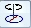
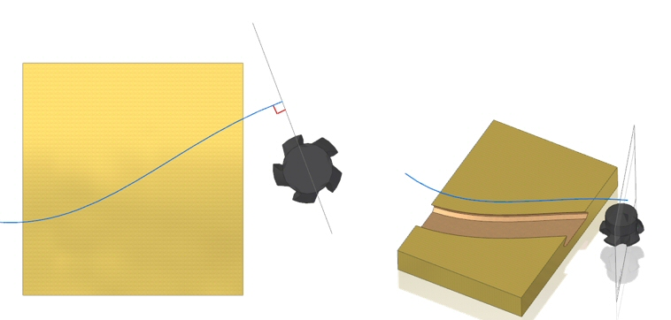

Construct a Solid Sweep Protrusion
Use the following workflow to create a solid sweep protrusion.
-
Choose Home tab→Solids group→Add list→Solid Sweep Protrusion.
-
Select the Path .
2D and 3D paths are supported.
-
Select the Tool .
For tool body examples, see the Solid Sweep Protrusion command.
-
Define the Axis

.Note:If the tool is cylindrical, the axis defaults to the cylinder axis.
If the tool is not on the path, the tool can be moved to the path by clicking the Place Tool On Path button .
Shown below is an example of a tool placed with this option off. The example is using the Solid Sweep Cutout command for illustration.

The solid sweep protrusion is created.
How do I
Construct a swept protrusion or cutoutConstruct a Solid Sweep Cutout
Learn more
Constructing swept featuresLook up more details
Swept Protrusion commandSwept Protrusion command bar
Sweep Options dialog box
Swept Cutout command
Swept Cutout command bar
Solid Sweep Protrusion command
Solid Sweep Cutout command
Solid Sweep Cutout command bar